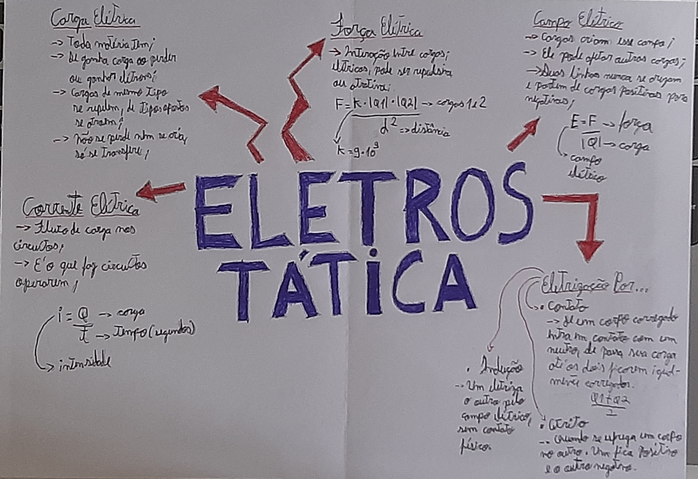

1º Trimestre
Tipos de Poluição
Descrição da atividade
Depois de uma aula explicativa sobre os diferentes tipos de poluição existentes, eu e meu grupo pesquisamos sobre a utilização de produtos químicos em plantações e montamos uma apresentação sobre o assunto. Após a pesquisa, nós passamos a compreender de maneira mais clara os malefícios que esses produtos podem podem causar quando ingeridos, além dos impactos ao meio ambiente.
Habilidades: H1, H2 e H4
Mapa Mental sobre
Eletrostática

Descrição da atividade
Nessa atividade eu precisei criar um mapa mental sobre eletrostática, nele está explicado como calcular a intensidade de uma corrente elétrica, a força elétrica entre corpos, a força de um campo elétrico, o que são cargas elétricas as diferentes formas de eletrizar um corpo.
Habilidades: H29, H30 e H31
Relatório sobre Estequiometria
e a Indústria Brasileira
Descrição da atividade
Após algumas aulas expositivas sobre o que é estequiometria e como realizar cálculos estequiométricos, eu e meu grupo pesquisamos como esse assunto é aplicado na indústria metalúrgica brasileira.
Habilidades: H7, H9 e H10
Meme Evolucionista

Descrição da atividade
Nessa atividade, eu criei um meme utilizando como base teorias evolutivas. Na imagem em questão, algumas etapas da evolução da espécie humana estão enfileiradas, representando seu avanço ao longo do tempo. Porém, ao se deparar com o humano atual, representado pelo meu grande amigo Lucas Russeff, o Homo sapiens exclama para as etapas anteriores recuarem, renegando o estado atual da raça humana.
Habilidades: H15 e H18